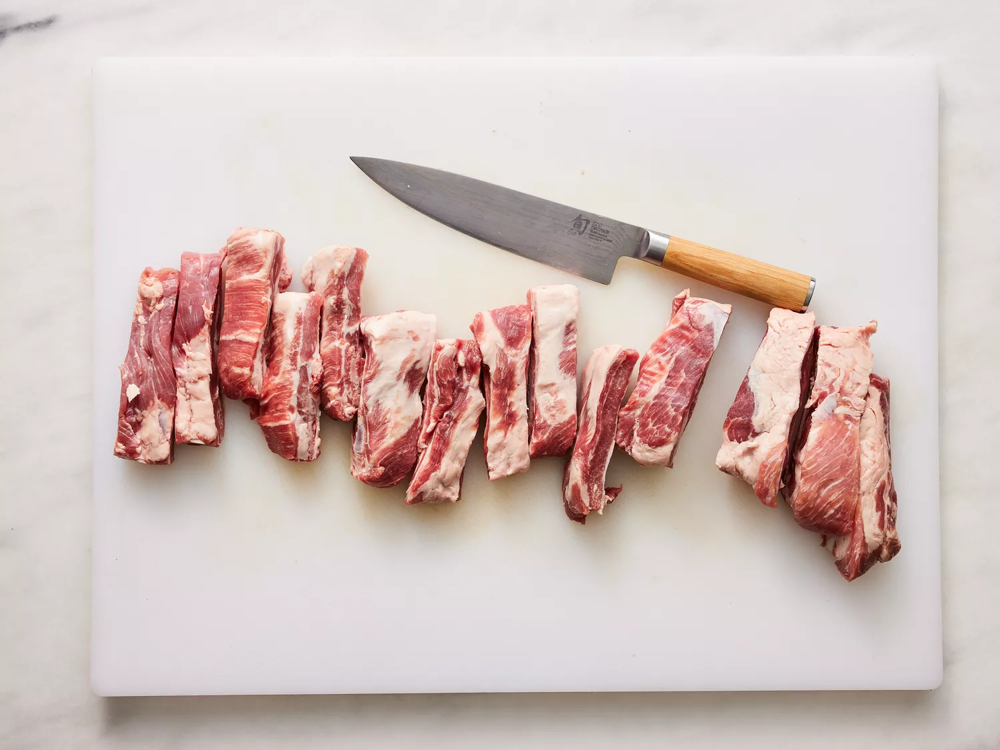
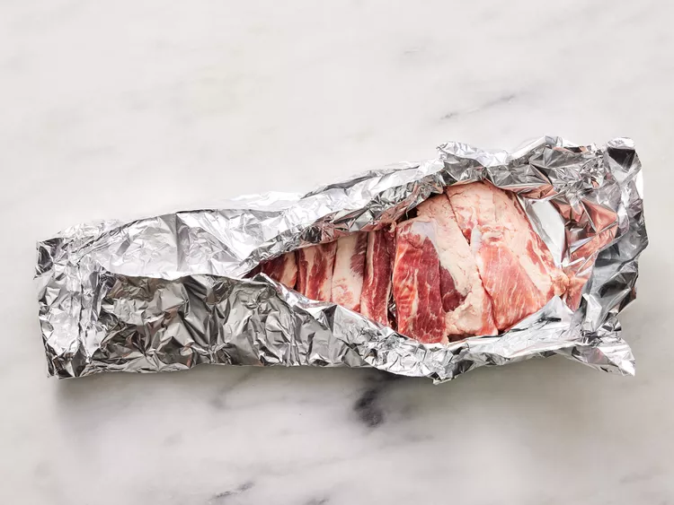
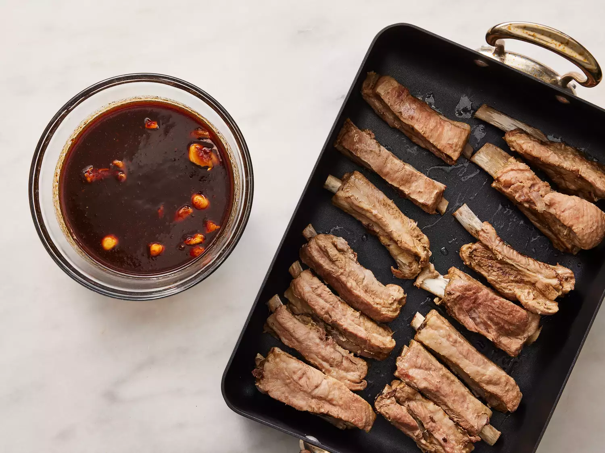

Directions
- Preheat the oven to 350 degrees F (175 degrees C).
- Cut spareribs into serving size portions; wrap in double thickness of foil.  
- Bake in the preheated oven for 1 1/2 hours. Unwrap and drain drippings. (I usually freeze drippings to use later in soups.) Place ribs in a large roasting pan.
- Mix together brown sugar, chile sauce, ketchup, soy sauce, Worcestershire sauce, rum, garlic, mustard, and pepper in a bowl. Coat ribs with sauce and marinate at room temperature for 1 hour or refrigerate for 8 hours to overnight. 
- Preheat the grill to medium heat. Position grate 4 inches above heat source; grease the grate with cooking spray.
- Cook ribs on the preheated grill for 30 minutes, basting with marinade.